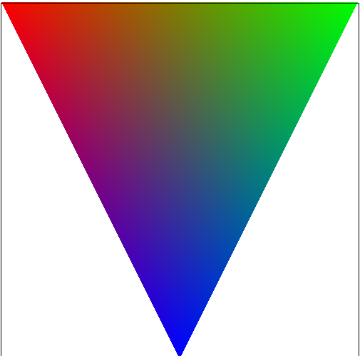
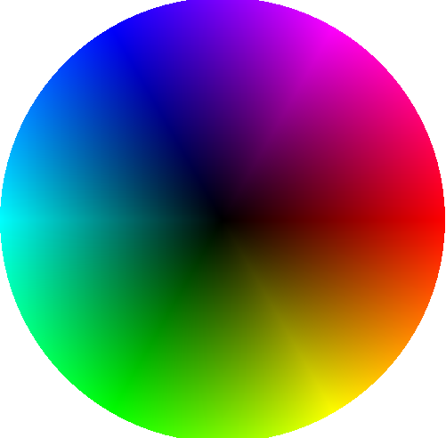
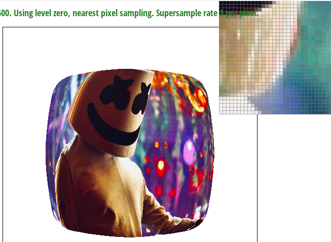
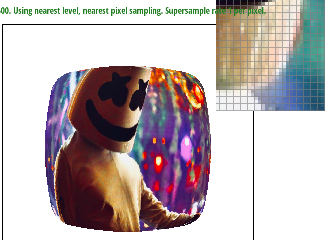
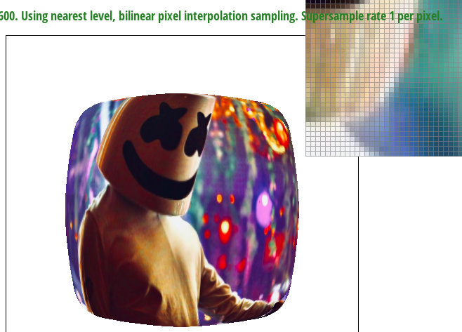

Task 1
In my own words, rasterizing triangles is the process of converting from an .svg file to pixels, by sampling the .svg at certain points to determine whether how pixels should be colored.
To rasterize triangles, we implemented the rasterize_triangle function. To do this and to avoid overcomputation,
I first found min and max of x and y, for each triangle to create a rectangle 'bounds.' From there, I looped through
every pixel within the rectangle bounds and called a helper function, inside triangle.
This function inside triangle takes in three points (the points of the triangle as defined) and also another point that we want to test
whether it is inside the triangle or not. Within the body of the triangle, we calculate l0, l1, and l2 by first finding dx and dy between each pairing of x and y.
Then we plugin the x and y we want to test for into the line equation. For example, to test whether (x,y) is either inside or outside line defined from point0 to point1,
we set l0 to -(x - x0) * dy0 + (y - y0) * dx0. Then, once getting l0, l1, and l2, we test whether either all of them are greater or equal to 0, or whether all of them are less than
or equal to 0. Therefore, to do this I looped through every x and y pairing that could potentially be in a triangle, then added 0.5 to test whether it was inside the triangle.
If it was inside the triangle, I called fill_pixel() helper function to fill in the triangle. Because we only check the bounding box defined by max x and max y of the points of the triangle, it can be no worse than one that checks each sample within the bounding box of the triangle.

Please see above for our completed Task 1 Image.
Task 2
For supersampling, I did everything the same as Task 1, except I changed two things.
1. Instead of simply calling fill_pixel, I used sample_buffer, where I would keep track of the percentage fill each pixel should have.
2. Once within the bounding box, I created an extra double for loop. Within these for loops, I looped through the sqrt of the sample rate, as for each axis thats how many unique values lied on the axis. Ie. with a
sampling rate of 4, x has 2 unique values and y has 2 unique values. Then, I defined double u and double v so that they checked every possible pairing of root sample rate axis values. Then, I once again ran inside triangle,
if it is, I would increment the sample_buffer correpsponding to the pixel we were in by 1/sample rate. For example, if all supersamples fell inside the triangle, the sample buffer for that pixel would be 1.


Above are comparisons of sample rates 1, 4, and 16 for basic/test4.svg
When zoomed in, you can clearly see the affect of supersampling


The reason why tehse results are observed, when comparaing rate 1 (far left) and rate 16 (far right) is because with supersampling, we have the ability to represent a pixel as 'half' colored, even
if the original reference point doesn't lie within the triangle. Especially at corners, where only a small bit of a pixel lies within a triangle, supersampling gives us an opportunity to still show edges without having to increase our picture resolution.
Task 3

Here, I am attempting to make the act scared. However, he recently dislocated his shoulder so his right arm doesn't go as far up as his left arm!
Task 4
Barycentric coordinates give us the relative positioning from three verticies of a triangle. When we have the Barycentric coordinates, then we can assign a proportion to include for each color corresponding to each vertex on the triangle.
Doing this allows us to create a gradient, as demonstrated by the image below.
Task 5
Barycentric coordinates give us the relative positioning from three verticies of a triangle. When we have the Barycentric coordinates, then we can assign a proportion to include for each color corresponding to each vertex on the triangle.
Doing this allows us to create a gradient, as demonstrated by the image below.

Here, in a 200x200 window, (0,0) represents red, (200, 0) represents green, and (100, 200) represents blue. Thus, each pixel on the triangle reprsents the proportion of red, green, and blue that that coordinate should have according to the barycentric coordinates, of which we then multiply the respective
alpha beta gamma by the red green and blue values.
Please see below for basic/test7.svg

Task 6
Level Sampling is the process of downsampling a texture. For example, when we have a photo with very intricate details, but when displayed at a small resolution or at a distance, these details become less noticeable. So here we utilizing level sampling because instead of
rendering the full resolution of the texture at all times, we can create multiple versions of the texture at different resolutions, or levels of details. Then, depedning on distance from viewer or size of screen, we can change our optimal level of detail.
There are different tradeoffs between pixel sampling, level sampling, and number of samples per pixel.
For pixel sampling, we sample each pixel individually, which is computationally intensive. This means we also have to use alot of memory to store a large amount of raw pixel data. However, pixel sampling improves antialiasing quality, but the improvement in quality diminishes with each additional sample.
For level sampling, we can improve speed by precomputing multiple levels of detail. However, this may take some overhead time, which impacts rendering speed.
For memory, we have to store the additionally precomputed mipmaps, which will require additioanl memory. However, memory overhead compared to storing full-resolution textures is is relatively low im comparison, which stores full-resolution textures.
For Number of samples per pixel, this affects rendering speed because increasing number of samples per pixel increases quality but takes more computation to render. For memory, increasing number of samples per pixel for things like antialiasing requires storing additional data for each sample, which increases memory usage. For antialiasing power, increasing the samples is correlated with improving antialiasing quality. However, improvement in quality diminishes with each additional sample.
Below are L Zero and P Nearest, L Zero and P Linear, L Nearest and P Nearest, and L Nearest and P Linear respectively.


